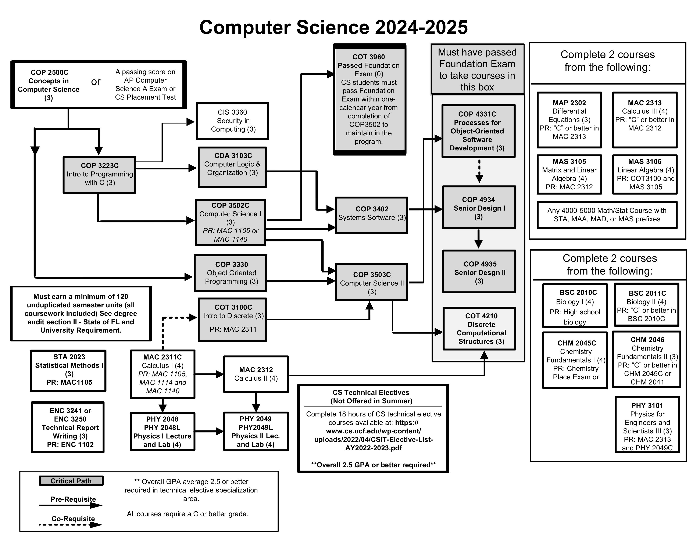

About the Major
Computer Science at UCF provides a strong foundation in programming, algorithms, and system design, preparing students for careers in software development, cybersecurity, AI, and data science.
The program emphasizes hands-on experience through research, internships, and collaborative projects.
With access to state-of-the-art labs and industry partnerships, students gain real-world skills that make them competitive in the job market. UCF’s location in Florida’s growing tech hub offers excellent networking opportunities, and graduates are well-prepared for roles in leading companies, startups, or advanced studies.
Computer Science Program Flowchart

Major-Specific Classes
Class 1: COT 3100C - Introduction to Discrete Structures
This course introduces logic, set theory, combinatorics, and proofs. It can be challenging due to its abstract nature and heavy emphasis on problem-solving and mathematical reasoning.
Class 2: COP 3502C - Computer Science I
This course covers programming fundamentals using C, including control structures, functions, arrays, and pointers. It can be demanding for beginners due to the steep learning curve and rigorous programming assignments.
Class 3: COP 3402 - Systems Software
This course explores low-level software concepts such as assemblers, linkers, loaders, and compilers. It’s often considered difficult because of the in-depth look at how software interacts with hardware and the need for precision in low-level coding.
Online Resources |
Campus Resources |